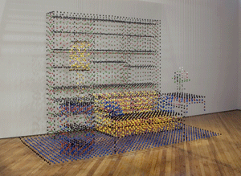

|
Chris Dorosz
Image: Chris Dorosz, The Painted Room, 2007, acrylic paint on monofilament, dimensions variable. Image courtesy of the Artist. |
 |
The San Jose Institute of Contemporary Art (ICA) is excited to present The Painted Room, a visually stimulating installation by San Francisco-based artist, Chris Dorosz. The exhibition runs from November 8th, 2008 through January 10th, 2009 in the ICA’s Focus Gallery. An opening reception will be held on Friday, November 7th from 6pm to 8pm.
The Painted Room creates the illusion of a life-size living room suspended in space that oscillates between representation and abstraction. Comprised of colorful splotches of paint that cling to clear hanging monofilament, this floating sculpture represents Dorosz’ interest in the analogous properties of paint and the digital pixel in an age that is lured by the mysteries of virtual reality. Up close, the viewer is able to see the individual components of paint, but cannot comprehend the overall imagery. However, with distance, the paint chips dissolve into a kind of 3-D pointillist sculpture consisting of a couch, tables, lamps, and wall shelves.
“In addition to the visual treat, gallery visitors will have fun becoming a part of the work by simply walking around the space,” notes Cathy Kimball, ICA Executive Director and Chief Curator. “Moving around the piece, you appear as sliced fragments through the vertical interruptions of the hanging paint splotches to other viewers on the opposite sides, creating apparitions of a human presence within the room.”
Canadian-born Dorosz maintains a studio practice in San Franciso and is a full-time instructor at the Academy of Art University. Dorosz graduated with an MFA from the Nova Scotia College of Art & Design in Halifax, Nova Scotia, and a BFA from Concordia University in Montreal, Quebec. In 2003 he won the Royal Bank of Canada’s New Painting competition. His work is in public and private collections throughout The United States, Canada, and the United Kingdom.
###
|
San
Jose Institute of Contemporary Art 560 South First Street San Jose, CA 95113 tel (408) 283-8155 fax (408) 283-8157 |